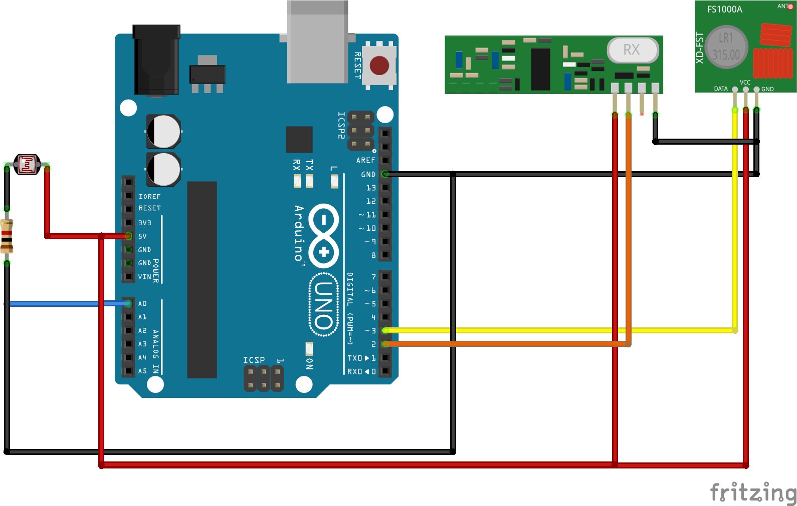
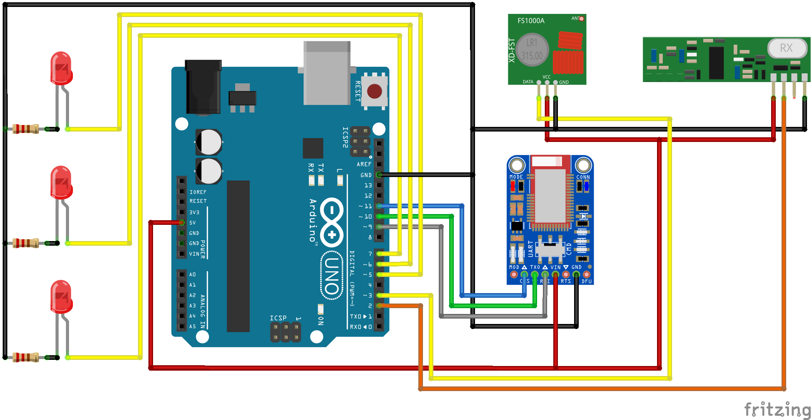

In this project you will learn how to use Adafruit's Bluefruit LE UART Friend, a Bluetooth Low Energy chip and Evothings Workbench to send data back and forth between an Arduino Uno and your Smartphone. The Arduino itself will gather data from other Arduinos, linked together by 433 MHz transmitter-receiver modules, which have the advantage of being very cheap. In this tutorial, we will use photocells to measure the luminosity in different rooms and detect if the lights are on or off, but you can use any type of sensor, for example humidity or temperature sensors. The code I will share with you is made so that you can easily alter it to suit your own projects.
The "mother" Arduino, the one gathering the data, will send request to each of the transmitter Arduinos, one at a time. Upon reception, the receiver Arduino will measure the luminosity and send back the data. This ensures that the data doesn't get mixed up, because we are using the same frequency (433 MHz) for every Arduino.
I will use 3 transmitter Arduinos, but you can use as many as you want !
You can browse the source code for this example at the Evothings GitHub repository
The file index.html is the entry point of the app.
The files Transmitter.ino and Receiver.ino contain the Arduino codes that gather data and listen for commands from the app.
This example runs in Evothings Viewer on Android or iOS.
You need to run the example in Evothings Viewer. Alternatively, you can make a Cordova application if you wish to distribute the app. You then need to include the Cordova plugin com.evothings.ble.
An iOS device or an Android device with support for Bluetooth 4.0 (which includes BLE) is required. In addition Android 4.3 or later is needed. Please note that BLE support on Android is still not fully mature. As a result, you may experience difficulties running this example. If the app stops working, restart Evothings Viewer.
For this project you will need the following:The first thing you need to do is to add an antenna on the transmitter and receiver modules. A 30 cm long wire will do the trick. Simply solder it in the hole marked as ANT. You will need to coil the one on the receiver for better reception, just wrap it around a pen.
We will start by making the transmitters. They are all built and coded in the same way, the only difference is the identification number we will add in the code. Let's start by wiring it up.
I used pin 2 on the Arduino for the receiver's data pin and pin 3 for the transmitter's data pin. The receiver has 2 identical data pins, you only need to use one. The photocell is connected to pin A0 on the Arduino. However, you need to use a resistor connected to one of the photocell's pins. Most of the time, a 10k Ω resistor is enough, but if you plan to use it in a bright room, you may need to replace it with a 1k Ω resistor, as it will probably saturate.
Here is a sketch showing the wiring:
Now let's move on to the code. We will use a library called RadioHead to send and received message with the RF transmitters/receivers. The one you need is the one called RH_ASK, which stands for RadioHead Amplitude Shift Keying. You can find it on this website. You will also need the SPI (Serial Peripheral Interface) library which is used for communication between two microcontrollers. It is not used in the code but needed to compile it.
The next step is to create the RH_ASK object that we will name driver. If you don't specify any parameters, it will be created with its default settings which are:
As I am using pins 2 and 3, I will specify those parameters. The kind of RF modules we are using don't have the Ptt function, so you can ignore it, unless you connect something to pin 10, in which case you need to set the Ptt pin to an unused pin (or -1) as it will cause some disturbance otherwise.
Here are the global variables used in the code:
The room variable is the Arduino's identification number. You need to increment it for
every transmitter Arduino you use.
The startRequest variable consists of the letter "a" followed by the identification
number. The transmitter Arduino will compare the request it receives from the "mother" Arduino to this
string. If they match, it will then send back the data read from the sensor.
The photocellPin variable is the pin on which the photocell is connected.
The photocellReading variable stores the value read from the photocell.
The setup part is pretty straightforward. You need to set the photocell pin to INPUT mode and, if you want to, start the Serial communication for debugging.
In the loop part we will write the code that handles the reception of requests and the transmission of the data. We begin by creating a 2 byte long buffer which will store the received request. The uint8_t format is the same as a byte, and means unsigned integer of length 8 bits. We also need to specify its length in the buflen variable.
Once the RF receiver receives a message of size buflen, it stores it in buf. As the format of the message is an array of bytes, we need to store it in a string variable in order to compare it to the expected request. This is done by assigning the buf variable, preceded by (char*). Note that the * means that the chars created will be pointers to the bytes, which does not used any additional storage.
When I tested this, I sometimes received the request followed by some weird characters which made the comparison impossible. I will therefore keep only the first two characters of the message by using the string function substring.
Now that we have our request stored in a string variable, we can compare it to the request we expected, which is startRequest that we created in the beginning.
If the received request matches the startRequest, the Arduino has to send back some data. So we start by reading this data, in this case from the photocell using the analogRead function and store it in the photocellReading variable. This gives us a value between 0 and 1023, but this is not practical for parsing as the length of the value varies. We will therefore use the map function to map the value to a number between 100 and 999, so that it is always 3 digits long.
Once we have our data correctly mapped, we have to send it to the "mother" Arduino. To make sure that it doesn't mix up the data, we will add the room's identification number to the beginning of the message we will send. After that, we create a char array (1 byte longer than the message length) and copy our message to it using the string function toCharArray.
Now all that is left to do is to send the message. This is done by using the send method of the driver object to a message in the uint8_t format. The waitPacketSent method is used to make sure that the data is fully sent before executing the rest of the code
Let's move on to the hard part, the Arduino receiver module that I call the "mother" Arduino. Actually it's not that hard, but you have to pay attention.
Like before we will start by wiring up the Arduino. Once again I used pin 2 on the Arduino for the receiver's data pin and pin 3 for the transmitter's data pin. The Bluefruit board is connected as follows (default configuration):
The MOD, RTS and DFU pins are not used in this example. Note that for this example the Bluefruit board has to be set to CMD mode on the small switch.
I connected 3 LEDs with a 220 Ω resistor for each one of them to pins 5, 6 and 7. This is optional, but can be useful in some cases.
Here is a sketch showing the wiring:
Now that the wiring is done, we can start coding. You will need several libraries to make it work. The Arduino.h, SPI.h and SoftwareSerial.h libraries are already present in the Arduino IDE and RH_ASK.h is the one we used in the previous code. The Adafruit_BLE.h, Adafruit_BluefruitLE_SPI.h and Adafruit_BluefruitLE_UART.h libraries can be downloaded from Adafruit's website. BluefruitConfig.h is a configuration file for the Bluefruit board.
Here are the global variables used in this code:
The nbRooms variables defines the total number of rooms, make sure you change this one
if you use more or less than 3 transmitter Arduinos
The values variables is an array of length nbRooms which will be used to store the data
received from the transmitter Arduinos.
The LEDpin variable is an array containing the pin numbers for the LEDs.
The limit variable is an array that will store the limits for the luminosity at which
the lights are considered on or off. Note that I forgot to replace the 3 with the
nbRooms variable, which you should do.
The time and currentTime variables are used for storing values
obtained from the millis function.
The dataToSend variable is used for storing the data to be sent to the Smartphone
The requests variable is a char array containing the requests to send to the
transmitter Arduinos. Don't forget to change this if you are using a different number of
transmitters.
The *request variable is a pointer to the request to be sent to the transmitter
Arduino.
The booleans gotResponse, firstRequest and sending
will be explained later on.
In this part we create the necessary objects.
Like before we create the RH_ASK
object named driver, but this time you need to set the Ptt pin to an
unused pin (or pin -1) because the default one is pin 10 which is already used by the Bluefruit
board.
We then create the bluefruitSS and ble objects. The
parameters used for these objects are those specified in the BluefruitConfig.h file.
Next are some setting definitions. The first one specifies if you want the Bluefruit board to perform a factory reset when it starts. The second one defines the minimum firmware version and the last one the behaviour of the red LED on the board. I recommend leaving those settings untouched.
In the setup part we will start by setting the LED pins to OUTPUT mode. We then set all the limits to 0 so that they are not null, which would prevent us from making any comparison. They will be changed on the mobile app later on.
This part of the setup handles the Bluefruit board configuration. The setupBluefruit function will be explained later on. The code following it changes the board's LED mode (if the firmware version is at least 0.6.6) and then set the board to data mode, so that it can communicate with the Smartphone.
In the loop part, we will handle the reception of the data from the transmitter
Arduinos, the transmission of this data to the Smartphone and the reception of the limits from the
Smartphone.
The data gathering and transmission part is inside an if expression so that you can stop
the BLE broadcasting if you want to, which I didn't do.
We will then loop through every room, set
the gotResponse to false and then send a request. At the same time we
start a timer by assigning a value to the time variable with the
millis function.
While we haven't received any response from the transmitter Arduino, we store the millis value in the currentTime variable in order to compare it to time. If the difference exceeds 500 milliseconds, it means that the message was lost and that we need to send another request. We also need to reset the time variable.
Once again we create a buffer to store the received data. Upon reception, we store the message in a string variable and parse the room and data values. If the room matches the expected one, we then set gotResponse to true and store the data in the values array.
In this part we handle the lightning of the LEDs. This is optional.
Once we have received and verified the data from every room, we can move on to the transmission of this data to the Smartphone. The message starts with a "#" and ends with a "*" in order to parse it easily in the Smartphone app. We also separate the values by a "/".
The message is then stored in a char array and sent to the Smartphone whit the ble.print method.
Next comes the reception of the limits sent by the Smartphone. We start by creating a string variable called values (not the same as the int array!) that will store the characters received through the BLE connexion. Once we have read the #, i.e. the starting point of the message, we set the recording variable to true which will enable the concatenation of the following characters to the values variable, until the * is read. When the message is complete, we parse and store the limits using the setLimits function that will be explained later on.
Here are the functions used in the code.
The first one displays an error message and stops the
execution of the program.
This function configures the Bluefruit board when it starts. It also performs a factory reset if it has been enabled.
This functions is used to send requests to the transmitter Arduinos, with the room identification number as parameter.
This functions parses the limit message received from the Smartphone and stores the limits in the limit array.
Last part of the project!
As always we start with the libraries you will need. The
cordova.js, evothings.js and ui.js are automatically
included when you create a new project in the Evothings workbench. The jquery.js
libraries is not mandatory, you could modify the code so that it wouldn't need it, but it makes things
easier.
For the BLE communication we will use easyble.js, which is built on top of
the Cordova ble plugin (com.evothings.ble, which you need to include if you want to
build the app) and it also requires the util.js library.
In order to define the
limits, we will use a slider. I used the rangeSlider.js library, downloadable here, to make it look nicer.
We will then create some objects. The first one, app, will contain our app's functions and variables. The second one, BluefruitUART, will contain the Bluefruit object once we have found it after the scan. The BLEDevice object will hold some information needed to communicate with the Bluefruit board.
Next we fill the BLEDevice object with the information. The name property contains the string that is broadcast by the Bluefruit chip and can be used to identify it. The services, writeCharacteristicUUID and readCharacteristicUUID properties contains UUIDs that are specific to the Bluefruit chip. The first one is used to read the services from the chip and get access to them, the second one to send data to the chip and the third one to receive data.
We are now filling the app object with the code's global variables. The values property will store the values received from the "mother" Arduino and message will store the raw data. nbRooms contains the total number of rooms and msgLength the length of the message that will be received.
The main function is called once the device is ready. It adds event listeners to the Connect and Disconnect buttons. The first one connects to the Bluefruit chip, reads its services, enables the notifications and then sends the limits to the "mother" Arduino.
function main() { // Main function called when the device is ready var connect = document.getElementById('connect'); connect.addEventListener('click', function() { connect.innerHTML = 'Connecting'; app.connectToBluefruit(function() // Connect to Bluefruit device { app.readServices(function() // Read services from Bluefruit device { app.enableNotifications(app.sendLimits); // Enable notifications from Bluefruit device and send stored limits $('#connect').hide(); $('#disconnect').show(); connect.innerHTML = 'Connect'; } ); } ); } ); var disconnect = document.getElementById('disconnect'); disconnect.addEventListener('click', function() { app.disconnect(); // Disconnect from Bluefruit device $('#roomList').empty(); $('#disconnect').hide(); $('#connect').show(); } ); }
Once the device is ready, the main function is called.
document.addEventListener('deviceready', main, false); // Wait for the device to be ready before executing code
We are now moving on to the functions. The first one, connectToBluefruit scans for BLE devices and stops once it finds the one with the one with the correct name. It then stores the device in the BluefruitUART object and uses one of its methods to connect to it. Once the connection is established, it calls another function passed as a parameter, which is readServices.
app.connectToBluefruit = function(callback) // Connect to Bluefruit device { evothings.easyble.startScan // Start scanning ( function(device) { if (device.name == BLEDevice.name) // If device name correspond to Bluefruit device name { evothings.easyble.stopScan(); // Stop the scan BluefruitUART = device; // Store the Bluefruit device console.log('Adafruit Bluefruit LE UART found !'); BluefruitUART.connect // Connect to Bluefruit device ( function(device) { console.log('Connected to BLE device ' + BluefruitUART.name); callback(); }, function(errorCode) { console.log('Failed to connect to BLE device: ' + errorCode); } ) } }, function(errorString) { console.log('Error while scanning: ' + errorString); } ); };
The disconnect function uses the close method of BluefruitUART object to disconnect from the Bluefruit device.
app.disconnect = function() // Disconnect from Bluefruit device { BluefruitUART.close(); console.log('Disconnected from BLE device ' + BluefruitUART.name); };
The readServices function reads the services from the BLE device once the connection has been established. It uses the services UUID we specified earlier.
app.readServices = function(callback) // Read services from Bluefruit device { BluefruitUART.readServices ( BLEDevice.services, function(device) { console.log('BLE services available for device ' + BluefruitUART.name); callback(); }, function(errorString) { console.log('BLE services error: ' + errorString); } ) };
The sendMessage function sends data to the Bluefruit chip. It uses the writeCharacteristic UUID we specified earlier.
app.sendMessage = function(message) // Send a message to Bluefruit device { var data = evothings.ble.toUtf8(message); BluefruitUART.writeCharacteristic ( BLEDevice.writeCharacteristicUUID, data, function() { console.log('Sent: ' + message); }, function(errorString) { console.log('BLE writeCharacteristic error: ' + errorString); } ) };
The enableNotifications function is used to receive data from the Bluefruit chip to the
Smartphone. The first thing to do is to write the descriptor in order to be able to enable notifications
when it changes. The writeDescriptor method of the BluefruitUART
object takes several parameters. The first one is the readCharacteristicUUID that we
specified earlier. The second one is the descriptor UUID, which is the same for every
BLE device. The third one is the container for the data that will be read from the Bluefruit chip.
Once
the descriptor is written, we need to enable the notifications that will call a function each time the
data read from the descriptor changes. This is done using the enableNotification method
of the BluefruitUART object, which needs the readCharacteristicUUID.
Then comes the function that is called when the data changes. It parses the message and saves the
values. The parsing can seem a bit tricky and complex, but I wanted to take precautions to make sure
that no data is lost.
Once the values are saved, the fillRoomList function is
called, which calls the setupSlider function that we will cover next.
app.enableNotifications = function() // Enable notifications for Bluefruit device { BluefruitUART.writeDescriptor // Write descriptor for Bluefruit device ( BLEDevice.readCharacteristicUUID, '00002902-0000-1000-8000-00805f9b34fb', // Same for every BLE device new Uint8Array([1]), function() { console.log('BLE descriptor written.'); }, function(errorString) { console.log('BLE writeDescriptor error: ' + errorString); } ); BluefruitUART.enableNotification // Enable notifications for Bluefruit device ( BLEDevice.readCharacteristicUUID, function(data) { var message = evothings.ble.fromUtf8(data); // Message received from transmitter Arduino /* This part handles the parsing of the received message (message). It will then be stored in (app.message). Due to the way Bluetooth works, the message will sometimes be sent in two parts, therefore I wrote a code that will concatenate the two parts if it happens. */ // If for some reason the stored message is longer than the max length (app.msgLength), empty it if (app.message.length > app.msgLength) { app.message = ""; } // If both the message and the stored message are shorter than expected if (app.message.length < app.msgLength && message.length < app.msgLength) { /* If the received message contains a '#' (message.indexOf('#') != -1), it means that it is the first part of the message, so the stored message has to be empty (app.message.length == 0). If the received message contains a '*' (message.indexOf('*') != -1), it means that it is the second part of the message, so the stored message can't be empty (app.message.length > 0). */ if ((message.indexOf('#') != -1 && app.message.length == 0) || (message.indexOf('*') != -1 && app.message.length > 0)) { app.message = app.message.concat(message); // Concatenate the received message to the stored message } } /* If the received message is as long as it should be (message.length == app.msgLength), it starts with a '#' (message.indexOf('#') == 0) and ends with a '*' (message.indexOf('*') == app.msgLength - 1), then it is complete and can be stored in (app.message) */ else if (message.length == app.msgLength && message.indexOf('#') == 0 && message.indexOf('*') == app.msgLength - 1) { app.message = message; } /* If the stored message is as long as it should be (app.message.length == app.msgLength), it starts with a '#' (app.message.indexOf('#') == 0) and ends with a '*' (app.message.indexOf('*') == app.msgLength - 1), then it is complete */ if (app.message.length == app.msgLength && app.message.indexOf('#') == 0 && app.message.indexOf('*') == app.msgLength - 1) { var end = app.message.indexOf('*'); // Get the position of the last char // Create an array (split("/")) from the message and store the values in (app.values) app.values = app.message.substring(1, end).split("/"); app.message = ""; // Empty the message console.log('--------------------------------------'); console.log("Data for room:"); for (var i = 0; i < app.values.length; i++) { app.values[i] = parseInt(app.values[i]); // Convert the values from string to int console.log(" * " + i + " is " + app.values[i]); } } app.fillRoomList(app.setupSlider); // Fill the list with the values that were stored and then configure the slider }, function(errorString) { console.log('BLE enableNotification error: ' + errorString); } );
The setupSlider function configures the sliders. When a slider is moved, the limit changes and is stored in localStorage by the function triggered by the onSlide event. The limits are then sent to the "mother" Arduino using the sendLimits function.
app.setupSlider = function() // Slide bar configuration { var slider = document.querySelectorAll('input[type="range"]'); rangeSlider.create(slider, { polyfill: true, // Boolean, if true, custom markup will be created rangeClass: 'rangeSlider', disabledClass: 'rangeSlider--disabled', fillClass: 'rangeSlider__fill', bufferClass: 'rangeSlider__buffer', handleClass: 'rangeSlider__handle', startEvent: ['mousedown', 'touchstart', 'pointerdown'], moveEvent: ['mousemove', 'touchmove', 'pointermove'], endEvent: ['mouseup', 'touchend', 'pointerup'], min: null, // Number , 0 max: null, // Number, 100 step: null, // Number, 1 value: null, // Number, center of slider buffer: null, // Number, in percent, 0 by default borderRadius: 10, // Number, if you use buffer + border-radius in css for looks good, onInit: function () { console.info('onInit') }, onSlideStart: function (position, value) { }, onSlide: function (position) { // When the slide bar is moved for (var i = 0; i < app.values.length; i++) { var slideBarValue = document.getElementById("slideBar" + i).value; if (slideBarValue == position) // If the value corresponds to the position of one of the slideBars { localStorage.setItem('limit' + i, position); // Store new limit } } app.sendLimits(); // Send limits to the transmitter Arduino (for lighting up the LEDs) }, onSlideEnd: function (position, value) { } }); };
As you probably remember, the fillRoomList function is called once the data has been
parsed from the message received from the "mother" Arduino. It displays the state of the light and a
slider for every room. An HTML element is created and appended to the roomList
list.
Note that the slider value represents the limit and the buffer the value read by the sensor.
The buffer is expressed as a percentage, hence the division by 10.
app.fillRoomList = function(callback) // Fill the list { var roomList = $('#roomList'); roomList.empty(); // Empty the list if (app.values.length) // If there are some values { for (var i = 0; i < app.values.length; i++) // For each room { if (localStorage.getItem('limit' + i) === null) // If the limit hasn't been set yet, set to 100 (lowest) { localStorage.setItem('limit' + i, 100); } var limit = localStorage.getItem('limit' + i); // Limit for the room var state; // State of the light if (app.values[i] > limit) { state = 'on'; } else { state = 'off'; } var element = $( // Element to be added in the list '<li>' + '<h1>Room ' + i + '</h1><br />' + 'Light is <strong>' + state + '</strong>' + '<div class="slideBar">' + 'Slide the bar to change the limit<br /><br />' + '<input' + ' id="slideBar' + i + '"' + ' type="range"' + ' min="100"' + ' max="999"' + ' value="' + limit + '"' + ' data-buffer="' + app.values[i]/10 + '"' + 'data-rangeSlider>' + '<br />' + '</div>' + '</li>' + '<br />' ); roomList.append(element); // Append the element } } callback(); // Configure the slider once all the element are added to the list };
The sendLimits function creates a message starting with a #, containing the limits separated by a / and ending with a * and sends it to the "mother" Arduino.
app.sendLimits = function() // Send the limits to the transmitter Arduino { var message = '#'; // Start the message with a '#' for (var i = 0; i < app.values.length; i++) { message = message.concat(localStorage.getItem('limit' + i)); if (i < app.values.length - 1) { message = message.concat('/'); // Separate the values with a '/' } } message = message.concat('*'); // End the message with a '*' app.sendMessage(message); // Send the message } };
Congratulations, you have now finished this project! All that remains is to plug in the Arduinos and start the app on your mobile device. If everything is working, you should see a list of all the rooms, containing the state of the light and a slider. Move the slider to change the limit and you will see the LEDs turning on or off on the "mother" Arduino.